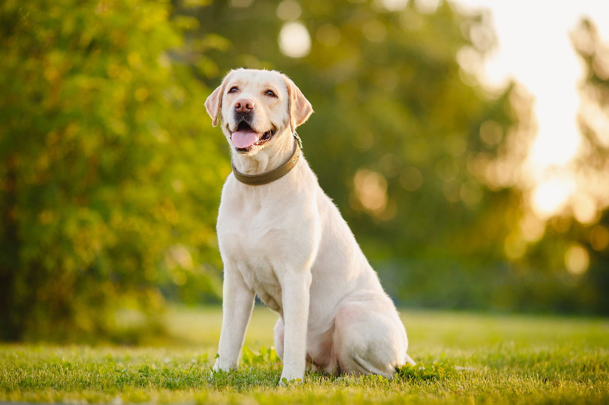

A world of tails, fur, and fascinating tales - Let's dive into the captivating diversity of dog breeds!
Bernese Mountain Dog
© post.bark.co
The Bernese Mountain Dog is a large, sturdy breed with a striking tricolored coat of black, white, and rust. Renowned for their calm and affectionate nature, they thrive as loving companions and excel in roles as therapy or working dogs.
Siberian Husky
© Zakharov Evgeniy - stock.adobe.com
The Siberian Husky is a medium-sized, energetic breed recognized for its stunning appearance, characterized by a thick double coat and distinct markings. Known for their intelligence and endurance, these friendly and outgoing dogs possess a strong work ethic, historically used for sledding and excelling in various active roles.
Samoyed
© wagwalking.com
The Samoyed is a fluffy, medium-to-large breed prized for its dazzling white coat and perpetual "smiling" expression, radiating friendliness and charm. Known for their gentle and sociable nature, these affectionate dogs thrive on companionship and make delightful family pets due to their loving and adaptable temperament.
Border Collie

© petstek.com
The Border Collie is a highly intelligent and agile breed, renowned for its exceptional herding skills and intense focus. With boundless energy and an innate ability to understand commands, they excel in various canine sports and are cherished for their unwavering loyalty and trainability.
Corgi
© hundeo.com
Corgis, notably Pembroke and Cardigan breeds, are small, sturdy dogs with distinctively short legs, fox-like features, and expressive personalities. Known for their intelligence and affectionate nature, they make delightful companions, cherished for their playful demeanor and innate herding instincts.
German Shepherd Dog
© insidedogsworld.com
The German Shepherd Dog is a versatile and highly intelligent breed, celebrated for its strength, loyalty, and exceptional trainability. Known for their noble appearance and steadfast work ethic, they excel in various roles from herding to service and are valued as loving protectors and devoted family companions.
Shetland Sheepdog

© petmd.com
The Shetland Sheepdog, often called the "Sheltie," is a small yet intelligent herding breed, recognized for its stunning, long, flowing coat and bright, attentive expression. With their keen intelligence and affectionate nature, they make devoted companions, excelling in agility and obedience due to their eagerness to please.
Beagle
© akc.org
The Beagle is a small to medium-sized breed known for its adorable floppy ears, soulful eyes, and excellent scenting abilities. With an amiable and curious personality, they're friendly, merry companions, often cherished for their playful nature and adaptability in various households.
Golden Retriever
© davisenterprise.com
The Golden Retriever is a friendly, intelligent, and devoted breed known for its beautiful golden coat and gentle demeanor. Renowned for their loyalty and outgoing personality, they excel as loving family pets, therapy dogs, and in various roles due to their versatile nature and eagerness to please.
Labrador Retriever
© animalcarecentersmyrna.com
The Labrador Retriever, often called Labs, is a friendly, outgoing breed known for its intelligence, loyalty, and affectionate nature. With a sturdy build and a love for both play and work, they're versatile companions, excelling in roles as family pets, service dogs, and skilled working partners.
Bulldog
© Kristie Lee - The Spruce
The Bulldog is a medium-sized, muscular breed recognized for its distinctive wrinkled face and resolute, yet gentle, demeanor. With a sturdy build and a laid-back attitude, they make loyal and affectionate companions, valued for their courage and calm disposition.
Poodle

© Patrick Heagney - Getty Images
The Poodle is an elegant and intelligent breed known for its curly, hypoallergenic coat and exceptional trainability. With a proud bearing and a playful spirit, they excel in various activities and sizes, making them versatile companions highly regarded for their intelligence and grace.
West Highland White Terrier
© britannica.com
The West Highland White Terrier, often called the Westie, is a small, spirited breed with a distinctive white coat and a lively, friendly personality. Known for their confidence and affectionate nature, they make delightful companions, prized for their spunky charm and loyalty to their families.
Miniature Schnauzer
© akc.org
The Miniature Schnauzer is a small, alert breed recognized for its distinctive beard, bushy eyebrows, and a keen, expressive demeanor. With a lively and adaptable nature, they make devoted family pets, cherished for their intelligence, loyalty, and charming personality.
Chihuahua
© petmd.com
The Chihuahua is a tiny breed with a big personality, known for its saucy attitude, large ears, and alert expression. With a fiercely loyal and affectionate nature, they make loving companions, often displaying confidence that far exceeds their size.
Maltese
© enduraflap.com
The Maltese is a small, elegant breed known for its long, silky white coat and gentle, affectionate nature. With a playful yet gentle demeanor, they make charming companions, cherished for their lively personality and devotion to their families.